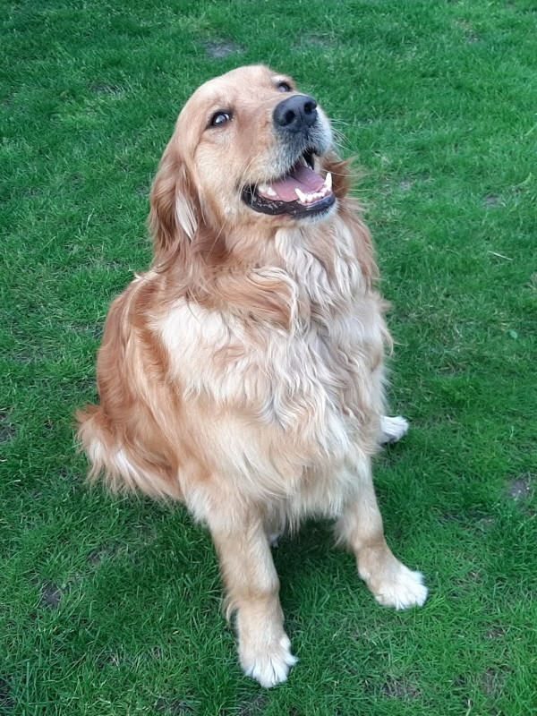

Típusok
Képek a típusokról:

Üdvözöljük a Golden Retriever bemutató oldalon!
| Típus | Típus leírása |
|---|---|
| Munkatípus | Könnyedebb felépítésű. Vékonyabb, hosszabb fej, sötétebb szőrszín, élénk temperamentum, karcsúbb, rugalmasabb, gyorsabb. |
| Kiállítási típus | Dúsabb, hosszabb szőrzet, robusztusabb felépítés, világosabb szőrszín, határozottabb. |
| Európai típus | Szőrszíne az arany világosabb árnyalata. Rövidebb szőrű, mint az amerikai. Lába rövidebb az amerikaiénál, így megjelenése zömökebb. Jól pigmentált. 33 szögelési előírás, 145 szögelési elöl. |
| Amerikai típus | Orr és fej része finomabb. Színe középarany, rézvörös, de sötét sem ritka. Mellől szögelése szerényebb, hátul olykor túlszögelt. |